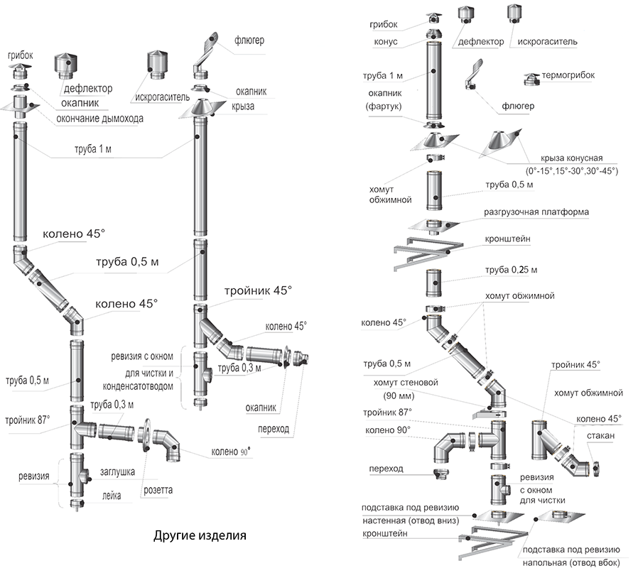

<dic id = "buck"></div>

<map name="originMap">
  <area id="area1" shape="rect" coords="6,65,52,116" href="#" onMouseOut="MM_swapImgRestore()" onMouseOver="MM_swapImage('origin','','images-dym/grobok-odnostenniy2_0.png',1)">
  <area id="area2" shape="rect" coords="71,66,162,136" href="#" onMouseOut="MM_swapImgRestore()" onMouseOver="MM_swapImage('origin','','images-dym/deflector2_0.png',1)">
  <area shape="rect" coords="176,64,265,146" href="#" target="_blank" />
  <area shape="rect" coords="628,4,710,72" href="#" />
  
  <area shape="rect" coords="710,-1,819,74" href="#" />
  <area shape="rect" coords="271,34,379,113" href="#" />

  
  
  <area shape="poly" coords="633,78,692,77,777,167,676,167" href="#" />
  <area shape="rect" coords="736,100,841,123" href="#" />
  <area shape="poly" coords="626,11,516,23,514,48,576,50,609,37,619,35" href="#" />
</map>
<script type="text/javascript">
(function MM_preloadImages() { //v3.0
  var d=document; if(d.images){ if(!d.MM_p) d.MM_p=new Array();
    var i,j=d.MM_p.length,a=MM_preloadImages.arguments; for(i=0; i<a.length; i++)
    if (a[i].indexOf("#")!=0){ d.MM_p[j]=new Image; d.MM_p[j++].src=a[i];}}
})();

function MM_swapImgRestore() { //v3.0
  var i,x,a=document.MM_sr; for(i=0;a&&i<a.length&&(x=a[i])&&x.oSrc;i++) x.src=x.oSrc;
}

var area1 = document.querySelector("#area1");
//area1.onmouseover = MM_swapImage('origin','','images-dym/grobok-odnostenniy2_0.png',1);
//area1.onmouseout = MM_swapImgRestore();

function MM_findObj(n, d) { //v4.01
  var p,i,x;  if(!d) d=document; if((p=n.indexOf("?"))>0&&parent.frames.length) {
    d=parent.frames[n.substring(p+1)].document; n=n.substring(0,p);}
  if(!(x=d[n])&&d.all) x=d.all[n]; for (i=0;!x&&i<d.forms.length;i++) x=d.forms[i][n];
  for(i=0;!x&&d.layers&&i<d.layers.length;i++) x=MM_findObj(n,d.layers[i].document);
  if(!x && d.getElementById) x=d.getElementById(n); return x;
}

function MM_swapImage() { //v3.0
  var i,j=0,x,a=MM_swapImage.arguments; document.MM_sr=new Array; for(i=0;i<(a.length-2);i+=3)
   if ((x=MM_findObj(a[i]))!=null){document.MM_sr[j++]=x; if(!x.oSrc) x.oSrc=x.src; x.src=a[i+2];}
}
</script>

